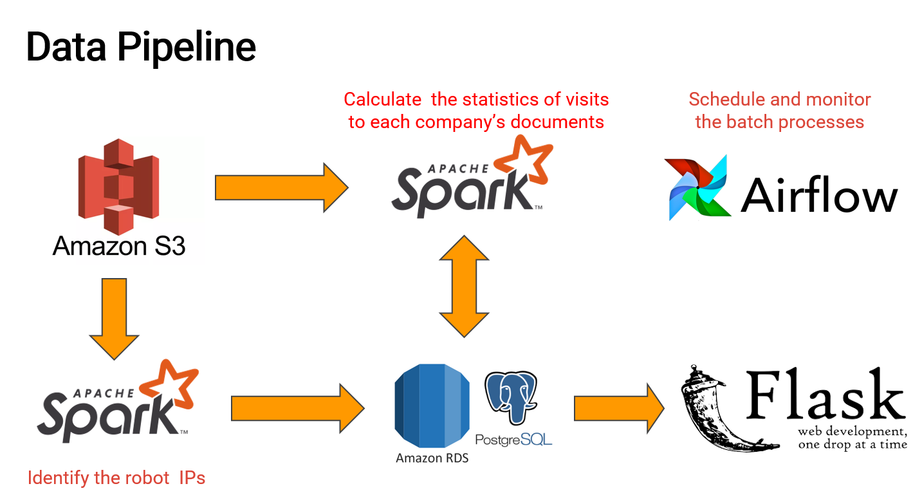

Insight Project
Analyzing the statistics of the users' visits to the websites of companies has been a common tool to understand customers' insterests and trend of products. However, the weblog files and pageview information often include activities from web crawlers (bots) which can mislead companies to draw wrong conclusions and thus make wrong decisions. This insight project aims to help companies identify and filter the web crawler activities, and precisely analyze their customers' behavior.
The dataset used in this study are EDGAR logfiles (millions of records per day) which stores user's access to the financial documents on sec.org. However, this work can be extended to other companies such as e-commerce, digital media and so on, which have larger volume of visits every day.
The data pipeline consists of two batch processings: (a) identifying the robot IPs and (b) filtering the detected robot IPs and calculate the user access statistics. Apache Airflow is employed to schedule and monitor the daily batch jobs. The whole data pipeline is deployed on Amazon Web Services (AWS).
